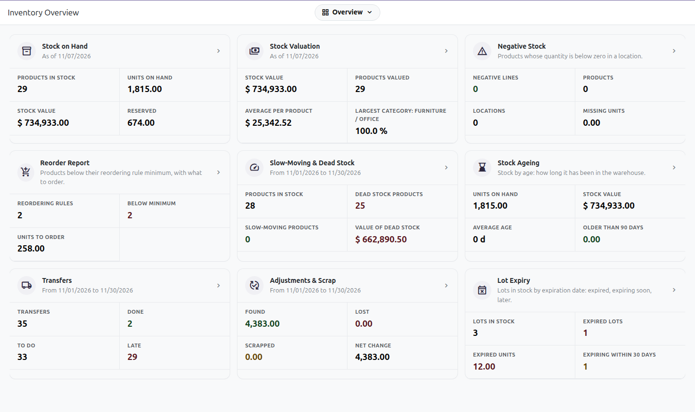
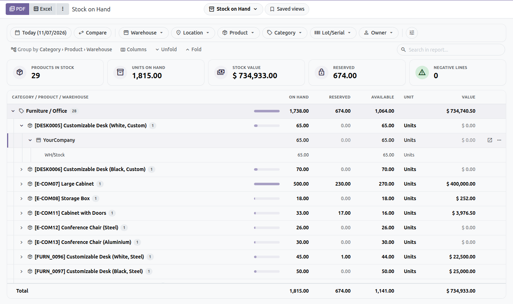
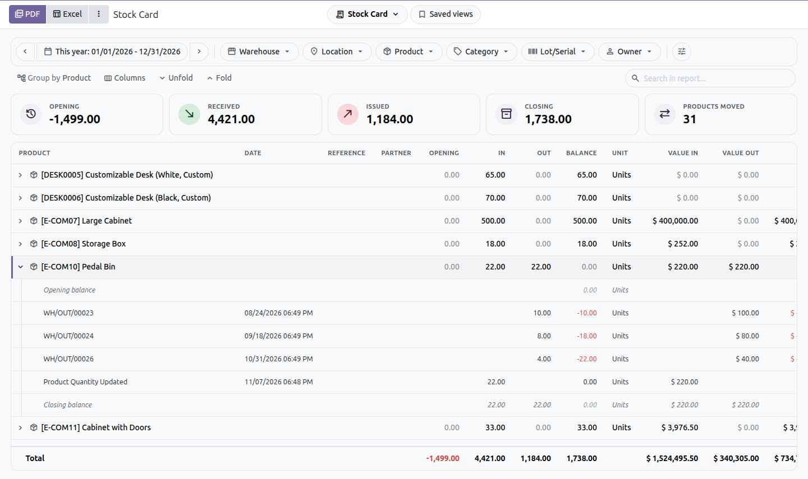
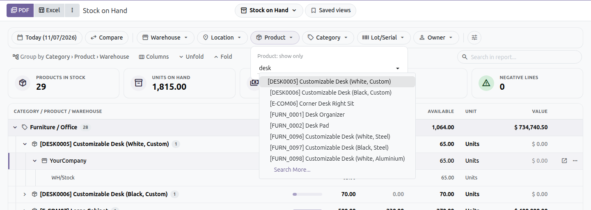
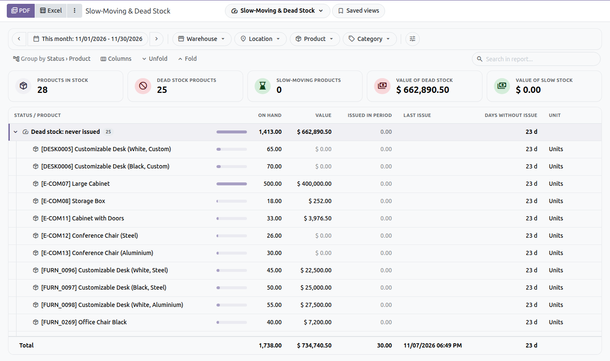
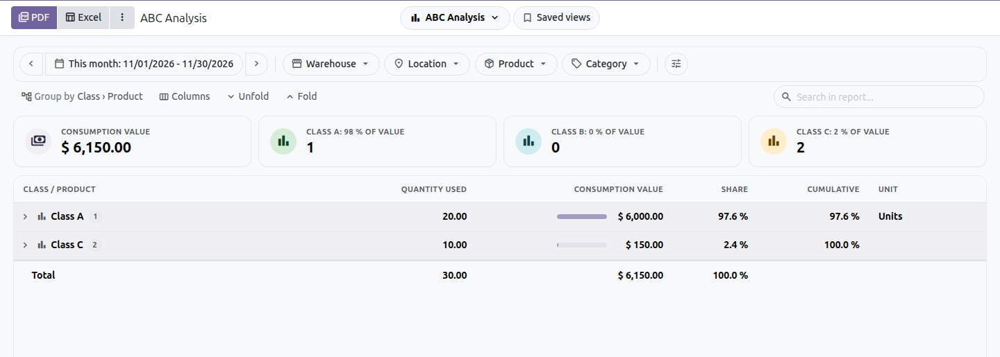
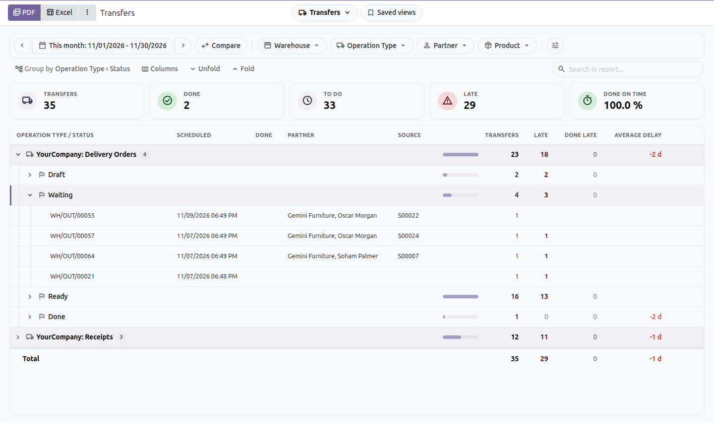
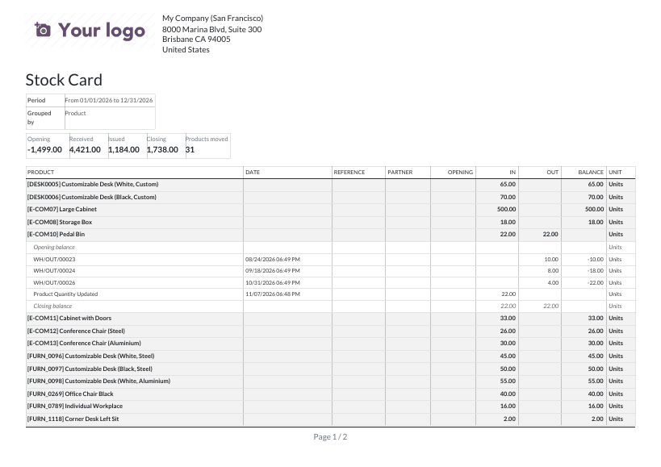
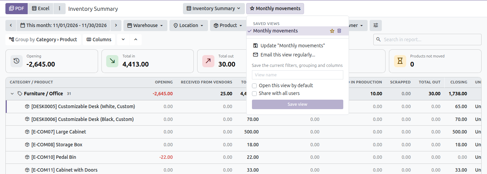
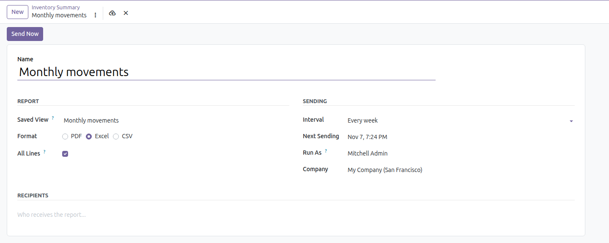

Twelve inventory reports on screen, with the filters at the top: stock on hand and at any date, stock card, inventory summary, ageing, slow-moving and dead stock, ABC analysis, turnover, reorder, transfers, adjustments and scrap. Groups unfold, rows open the moves, and every report exports to PDF and Excel the way it is shown.
The overview shows the key figures of each report as it opens today. Click a card to open the report, or a figure to open it already filtered: the negative lines, the products below their minimum, the dead stock, the late transfers.

The period and the filters stay above the report; it refreshes as soon as one changes. Pick warehouses, locations, products, categories, lots or owners as tags, with search.
| ✓ | Periods: today, this week, month, quarter or year, last ones, or a custom range; arrows move to the previous or next period. |
| ✓ | Group by up to three levels, in any order: category, product, warehouse, location, lot, package, owner. |
| ✓ | Key figures above the table; those with a filter icon narrow the report down to their lines. |
| ✓ | Compare with the previous period or the same period last year: previous, change and change in % columns. |
| ✓ | Sort by any column, show, hide and reorder columns, compact or comfortable rows, search in the report. |
| ✓ | Header, first column and total stay in place while scrolling; arrow keys move between rows, Enter opens. |

Unfold a product of the Stock Card to see its opening balance, each receipt and issue with its reference, partner and date, the running balance and the closing balance. Every line opens its transfer; the … menu opens the product in another report.


Dead stock (never issued), slow-moving stock (no issue for the number of days you choose) and moving stock, with the last issue and the days since.



The PDF and the Excel file print what the screen shows: the same filters, grouping, columns, sort, and the unfolded lines, or every line. The filters and the key figures are printed above the table.
| ✓ | Excel: real numbers and dates, the groups as Excel outline levels that fold, frozen header, filters on the header row. |
| ✓ | PDF: your company layout, A4 landscape, header repeated on each page. |
| ✓ | CSV for any other tool. |

Save the filters, grouping and columns under a name; open one by default; share it with the other users. A saved view can be sent by email every day, week or month, as PDF, Excel or CSV.


Install Inventory Reports; the reports are in Inventory › Reporting › Inventory Reports, for Inventory administrators.
With Accounting (stock valuation) installed, Inventory Reports - Valuation installs on its own: stock values in the reports and a Stock Valuation report at any date. With expiration dates, Inventory Reports - Expiry adds a Lot Expiry report.
Needs the Python library xlsxwriter, shipped with Odoo.
Odoo Mates · odoomates@gmail.com